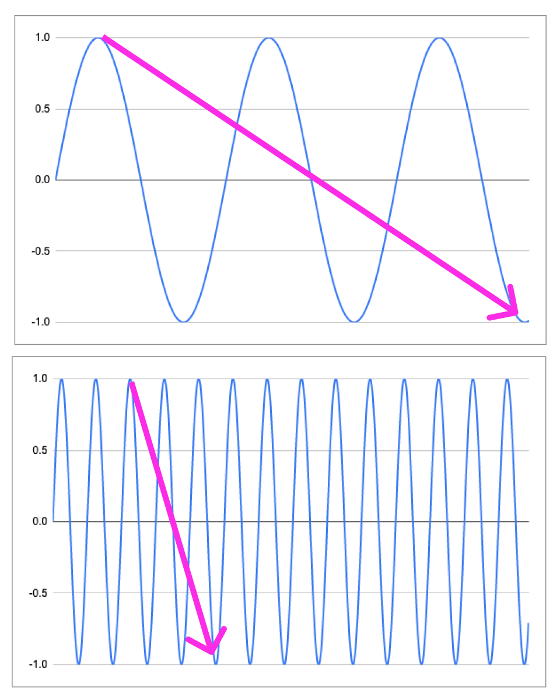

2021-05-31
In mathematics, sine waves help graph periodic oscillations. While they are commonly used in applications such as signal processing, I have found them to be an effective mental model for context switching.
I know this seems like a stretch, but I promise it sort of makes sense. And this is a short post anyway, so just keep reading.
Sine waves have an amplitude and frequency [1]. Simple tasks have low amplitudes. Complex tasks have high amplitudes. The more familiar you become with a given task, the higher the frequency you can handle (i.e. task-cycle efficiency). The integral of the curve is a measurement of impact.
If you increase the amplitude, you can achieve a similar integral with lower frequency. Some may recognize this as "work smarter, not harder". The reality is that more complex roles have higher amplitudes and higher frequencies (i.e. maximizing the integral). Whether you are a director managing several teams or a senior individual contributor working on a large project, the amount of context switching you experience will monotonically increase.
This is bad, right?
Nope.
This is a feature, not a bug.
How is that possible?
Let's go back to the sine wave. Imagine one with a high amplitude and low frequency. Now imagine another with the same amplitude but a higher frequency. The linear distance between two equivalent points will be smaller on the latter.

In other words, you can now connect dots and identify patterns faster than before — and in some cases connect dots you would not have been exposed to in the past. This is how you can turn context switching from a hindrance into an asset. The amplitude is going to increase as long as you continue to grow and push yourself. So focus on increasing your frequency [2].
This is not a call to intentionally switch contexts more often. Instead, it is a way of extracting value from the fact that most roles implicitly require more context switching.
Forcing yourself out of flow is as useful as throwing firecrackers into the middle of an orchestra ensemble.
NOTES
[1] Sine waves have additional variables that can define their shape and behavior, but amplitude and frequency were sufficient for this example. If you really want, read more about sine waves on Wikipedia, or crack open that old high school geometry textbook.
[2] The exception is when you want to explicitly examine parts of your work in a different way. Similar to signal processing, forcing a change in frequency (often a reduction) exposes nuances in the signal that would otherwise be missed (i.e. reducing noise). This is useful as an explicit exercise, but less as a default mode of operation.